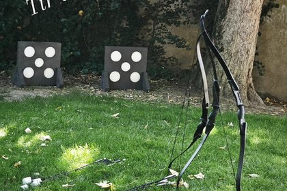
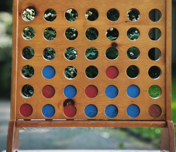
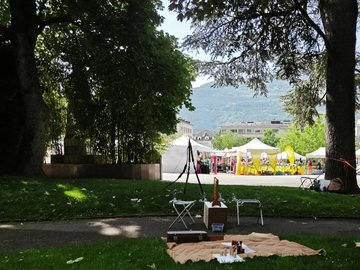

Se rencontrer
- Jeux pour briser la glace
- Jeux d’interaction et de mouvement
- Mimes
Festivals • fêtes • moments collectifs
Être acteur plutôt que spectateur.
L’animation participative peut trouver sa place dans votre festival, votre fête, votre association, votre événement familial ou tout autre moment collectif.
Elle peut être préparée à l’avance ou se construire directement sur place, selon le public, l’ambiance et les interactions qui apparaissent.
Une mallette d’outils
La diversité des jeux permet de faire évoluer l’animation en fonction de ce qui se passe sur le moment.



Photos de groupe
L’animation aide les participants à imaginer une situation, une composition, un geste ou une mise en scène collective.
L’objectif est de créer un souvenir original, marquant et drôle, plutôt qu’une simple photo où tout le monde pose face à l’appareil.
L’essentiel
Il n’y a pas de résultat particulier à atteindre. L’essentiel est de provoquer des rencontres et de permettre aux personnes d’interagir les unes avec les autres.
Durée et public
Les animations peuvent durer d’une demi-heure à quatre heures et s’adresser aux enfants, aux adolescents ou aux adultes.
La proposition peut se préparer en amont ou s’inventer sur place à partir de votre contexte.
Construire votre animation